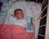

1st September 2001
Poppy had a bath this morning, and Aeryn helped to wash her hair. She had a very successful breastfeed and only received a top-up through her tube. This afternoon her Great-Grandmother visited for the first time and she had a nice cuddle. This evening she has been getting restless when on CPAP which may mean she is getting ready to come off it - we'll have to wait and see.
31th August 2001
Poppy was 3 months old today! She has had no problems with reflux since being given gaviscon with her milk, and has had no bradycardias as a result. She enjoyed a breastfeed.
30th August 2001
Poppy has had a fairly uneventful day today, although she is still having problems with reflux after she has fed. This evening she was weighed and is now 2.145KG.
29th August 2001
Poppy has had two bradacardias today, both when she was feeding. She is going to start having Gaviscon tommorrow which should help her digest her feeds. She had an eye test today and it has been confirmed that she has got Retinopathy of Prematurity which means her optic nerve is not developing properly. It does not require any treatment at the moment, but bradycardias don't help. There is a possibility that she will be short-sighted because of this.

28th August 2001
Poppy has had a very active day today. She has laid on the activity mat, which she seemed quite happy with. She has had another bath, which she enjoyed a great deal and she had a breastfeed.
27th August 2001
Poppy now weighs 4lb 6oz, nearly 2kg and the doctors are happy with her progress. Sharon has talked with Poppy's nurse and will take in an activity mat for Poppy to play on on the floor and a mobile for the cot so that when she is awake she will have some more stimulation. The nurses are very concerned that she get out a bit, as she is quite old now. Sharon may even be able to take Poppy for a walk in a pram and spend time in another room away from all the monitors.
26th August 2001
Poppy had a quiet day today, although she had a lovely cuddle with Daddy this evening. Poppy's feeds are now 42ml three-hourly.